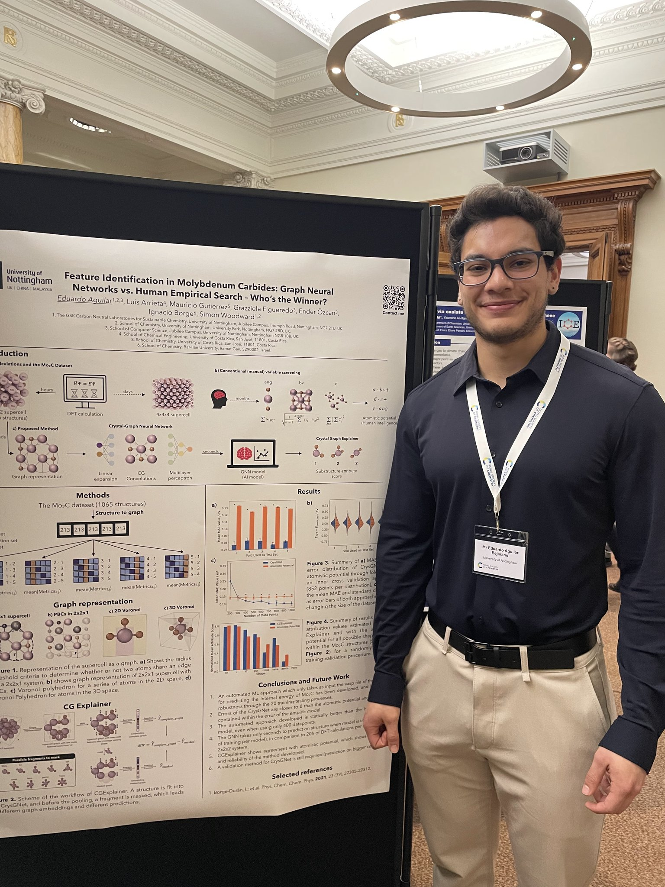

Hello! I'm Eduardo Aguilar-Bejarano, a PhD researcher at the University of Nottingham specialising in Chemistry and Artificial Intelligence. I'm passionate about leveraging machine learning — especially Graph Neural Networks (GNNs) — to solve complex problems in chemistry and materials science.
My academic journey began at the Universidad de Costa Rica, where I earned my Bachelor's degree in Chemistry with Honors (GPA 9.23/10). I then joined the AI Doctoral Training Centre at the University of Nottingham to pursue my PhD in Chemistry.
My research focuses on GNNs for catalyst optimisation, materials property prediction, and the development of explainable AI tools for chemical systems. The thread running through my work is the chemical representation problem — how molecules, materials, and reactions should be encoded for learning, and when geometric deep learning outperforms classical tabular descriptors. I work alongside Prof. Simon Woodward, Prof. Ender Özcan, and Dr. Grazziela Figueredo.
Since June 2026 I am a visiting researcher in the Anderson Lab at MIT (Koch Institute), developing interpretable AI models for novel lipid-nanoparticle discovery and drug delivery.
Outside of research, I enjoy exploring new AI technologies, hiking, and reading about the latest advances in cheminformatics. Feel free to connect on LinkedIn!
University of Nottingham, AI Doctoral Training Centre (EPSRC)
Full 4-year scholarship. Thesis on interpretable GNNs for structure–activity relationship discovery. Supervisors: Prof. Simon Woodward, Prof. Ender Özcan, Dr. Grazziela Figueredo.
Universidad de Costa Rica
GPA: 9.23/10. Graduated with honors in chemistry.
Colegio Científico Costarricense, San Pedro
Costa Rica's selective science-focused secondary programme.